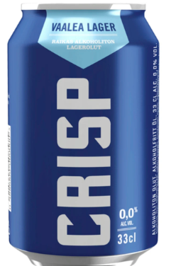
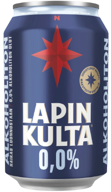

Crisp Lager
The Crisp Lager is a tasty lager with a citrus hints in the flavour. The price is 1.51€ so it is expensive compared to the beers that include alcohol, but it makes up from it in the taste. We gave it a rating of 2.3/5.

Lapin Kulta 0.0%
The Lapin Kulta alcohol free beer is a cheaper version of the Crisp lager and it's cheaper (1.30€) the taste is very similiar with hints of citrus, but still Crisp has a bit more flavour to it. We gave it a rating of 3.4/5.
